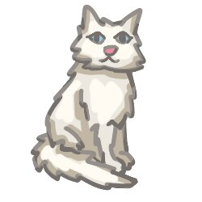
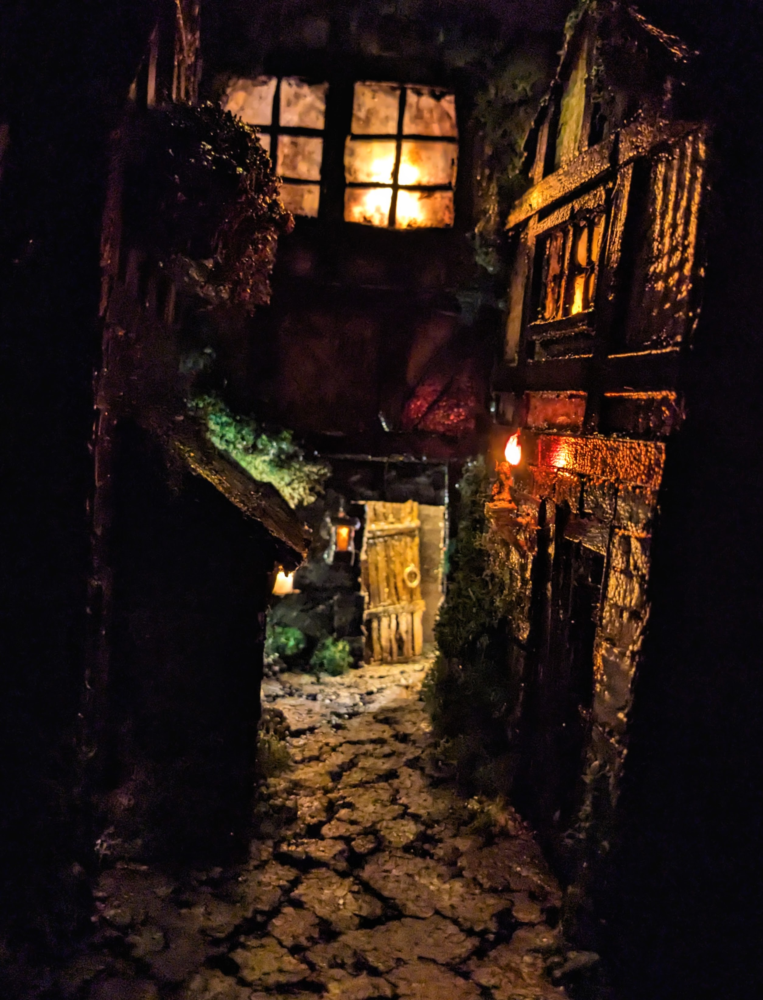
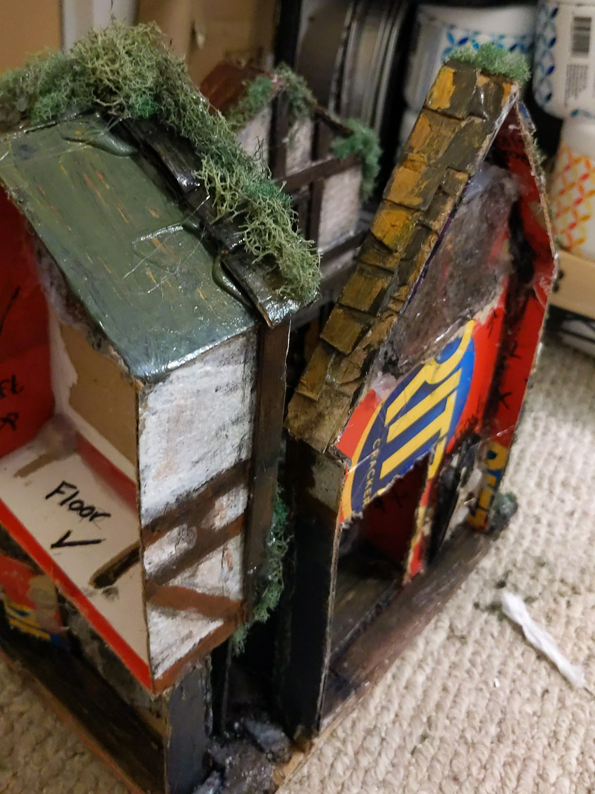

Guenevere Miller
Email | LinkedIn
Skills
Tehcnical & Computing
- Coding:
- Google Suite
- Microsoft Office Suite
- Ticketing Systems
- Data Analysis & Presentation
- Documentation creation & management
Transferable
- Project Management
- Time Management
- Customer Service
- Verbal & Written Communication
- People Management
Work History
IT Student Consultant | UMass Amherst - Amherst, MA | 10/2022 - Present
- Address inquiries regarding devices, technology, and WiFi at UMass Amherst.
- Help alleviate clients' stress through personalized attention.
- Work collaboratively with staff to address client needs efficiently.
IT Student Team Lead | UMass Amherst - Amherst, MA | 3/2025 - Present
- Create documentation to facilitate consistency in troubleshooting.
- Train new student consultants in job responsibilities and common issues.
- Manage student constantant concerns and questions.
SYSTEMology Intern | SnowAsset Management - Amherst, MA | 7/2025 - 12/2025
- Created and organized documentation to define workflows.
- Recorded and transcribed on-site video for use in documentation.
- Identified areas of improvement based on documentation and workflow.
Private Childcare Provider | Various - Somerville, MA | 01/2017 - 05/2022
- Offered child care services for ages from infants to upper middle school children.
- Assisted children's efforts on academic assignments.
Tutor | The Calculus Project - Somerville, MA | 06/2021 - 08/2021
- Supported rising 9th graders in learning foundational math concepts.
- Encouraged group and individual participation in students.
Education
Full Time Undergraduate | UMass Amherst - Amherst, MA | Class of 2026
- BS in Informatics (Data Science Concentration)
- English Minor
- Dean's List Student
- Programming classes: Python, Java, R, HTML
- Math classes: Data Science, Statistics, Calculus
- Writing classes: Journalism, Professional Writing, Writing for the Web
- Other interesting classes: History & Video Games, ASL, Human-Computer Interaction
High School | Somerville High School - Somerville, MA | Class of 2022
- Dual Enrollment at Bunker Hill Community College for Sociology
- President of Art Club
- Member of the National Art Honor Society
Projects
HackUMass 2025: Cat Adventure Video Game
- Created all artwork for a short video game.
- Included various versions of some sprites to create a jitter loop.
- Designed collaboratively in a small group.
- Completed full game design within 36 hours.
- Download the game here to play!

Mock Grant Proposal
- Researched global threat of Tuberculosis.
- Identified a grant suitable to fund the fight against TB.
- Broke down suggested budgeting for use of grant funds.
- Wrote a 26-page proposal to request grant funds on behalf of the endTB project.
- Download the full document here to read it.
Minature Scene
- Spent ~200 hours creating a city street scene.
- Creatively repurposed materials to save money and reduce waste.
- Wired scene to be lit using a string of fairy lights.
- Main Materials:
- Cardboard
- Hot glue
- Acrylic Paint
- Popsicle Sticks
- Styrofoam
- Dollar-store string fairy lights
 
Skills & Interests
Creating Art
- Minature design; upcycling trash to create mini scenes
- Traditional painting
- Digital art
- Upsycling trash
Reading
- Favorite Authors:
- Terry Pratchett
- Andy Weir
- Martha Wells
- Sarah J. Maas
- Favorite Books:
- Thud! by Terry Pratchett
- The Shepherd's Crown by Terry Pratchett
- The Truth by Terry Pratchett
- Monstrous Regiment by Terry Pratchett
- Murderbot Diaries by Martha Wells
- Project Hail Mary by Andy Weir
- Red, White & Royal Blue by Casey McQuiston
- Throne of Glass by Sarah J. Maas
Playing Games
- Favorite Board Games:
- Settlers of Catan
- Mysterium
- Codenames
- Favorite Video Games:
- Minecraft (~25,000 hours)
- Rimworld (~2,500 hours)
- The Sims 4 (~6,000 hours)
- Baulder's Gate 3 (~200 hours)